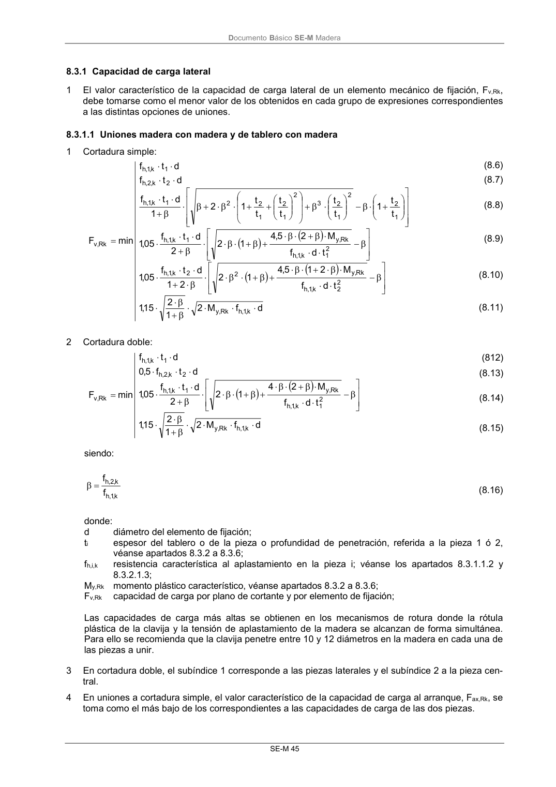

DB-SE-M · 8.3.1 Capacidad de carga lateral · versión 2019-12-20 · capa oficial
Formatos: JSON compacto · Markdown · PDF fuente
Ámbito del documento · texto del ámbito · documento y tablas
ID técnico a0105 · PDF pág. 51 · jerarquía no validada por persona · contrastado con el literal de la página 51 (candidato tipográfico); no validado por persona · padre: a0104
8.3.1 Capacidad de carga lateral 1 El valor característico de la capacidad de carga lateral de un elemento mecánico de fijación, Fv,Rk, debe tomarse como el menor valor de los obtenidos en cada grupo de expresiones correspondientes a las distintas opciones de uniones.

PDF fuente redistribuible: copia fiel enlazada en esta página (SHA256 verificado).